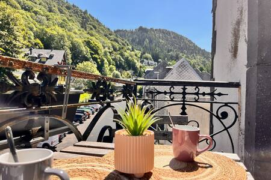
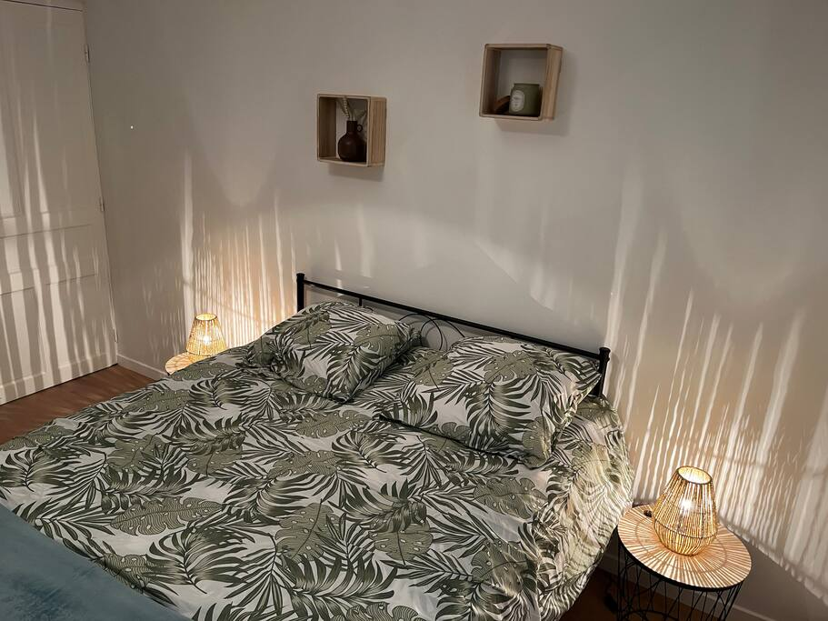

Villa Le Régis — Le Mont-Dore
Studios cocon au duplex 6 personnes, à deux pas des pistes et des sentiers du Sancy. Une salle de détente avec bar pour prolonger la soirée entre groupes.
Découvrir la villaAuvergne · Massif du Sancy
Karine & Jérôme vous ouvrent les portes de deux villas familiales, la Villa Le Régis au Mont-Dore et la Villa La Butte à La Bourboule — pour des séjours ski, randonnée ou thermalisme, au rythme de la nature auvergnate.
Bienvenue chez Jébaka
Nichées à quelques minutes l'une de l'autre au cœur du Parc naturel régional des Volcans d'Auvergne, nos deux résidences vous accueillent été comme hiver, pour des vacances actives ou tout en douceur.

Studios cocon au duplex 6 personnes, à deux pas des pistes et des sentiers du Sancy. Une salle de détente avec bar pour prolonger la soirée entre groupes.
Découvrir la villa
Quatre appartements T2 avec accès jardin, dans la douceur d'une cité thermale Belle Époque. Le calme et la nature à deux pas du centre.
Découvrir la villaPourquoi Jébaka
Départ des pistes du Mont-Dore à quelques minutes à pied, matériel et navettes à proximité.
Le massif du Sancy et ses volcans se découvrent été comme hiver, sentiers balisés au départ des villas.
La Bourboule, station Belle Époque, invite à la détente entre soins thermaux et flânerie.
Accès jardin à la Villa La Butte, air pur et calme volcanique garantis.
Du studio pour deux au duplex 6 personnes, une salle de détente avec bar pour les grandes tablées.
Des propriétaires présents et disponibles, pour un séjour sans souci du premier au dernier jour.
« Un accueil chaleureux, une villa impeccable et un cadre naturel à couper le souffle. On reviendra à chaque saison. »
Réservez votre séjour
Contactez-nous avec vos dates et le nombre de personnes : nous revenons vers vous rapidement avec les appartements disponibles au Mont-Dore ou à La Bourboule.
Voir les disponibilités